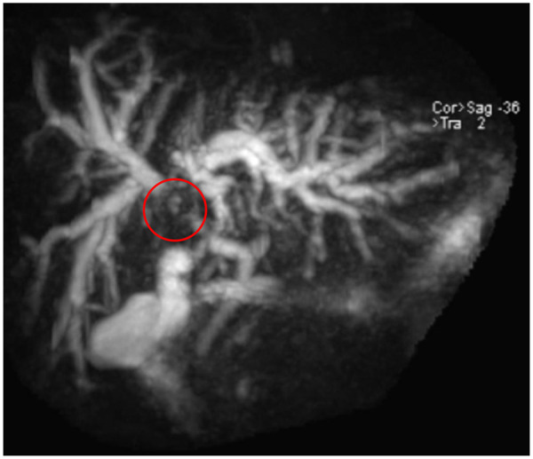

Ficha del catálogo
Colangiocarcinoma hiliar
- Sistema
- Digestivo
- Modalidad
- RM
- Región
- Confluencia biliar hiliar
- Dificultad
- Avanzado
Es el tumor maligno originado en el epitelio biliar de la confluencia de los conductos hepáticos, conocido también como tumor de Klatskin. Se manifiesta con ictericia progresiva, prurito y pérdida de peso, con una masa que suele ser pequeña y de crecimiento infiltrante. Su valoración por imagen determina la extensión ductal y vascular y por tanto la posibilidad de resección.
Técnica
La resonancia con colangiorresonancia y estudio dinámico tras gadolinio es la técnica más completa, porque combina el mapa ductal con la caracterización del tumor y la valoración vascular. Es preferible realizarla antes de colocar prótesis o drenajes biliares, ya que la instrumentación introduce inflamación y aire que degradan la evaluación de la extensión.
Qué observar
- Estenosis de la confluencia biliar con dilatación de los conductos intrahepáticos por encima
- Vesícula colapsada y colédoco distal de calibre normal, lo que sitúa el obstáculo en el hilio
- Masa o engrosamiento parietal periductal con realce tardío y progresivo por su estroma fibroso
- Extensión del tumor a los conductos de segundo orden de cada lado, dato clave para la resecabilidad
- Invasión o englobamiento de la arteria hepática y de la vena porta, y su lateralidad
- Atrofia lobar con aglomeración de conductos dilatados, signo indirecto de afectación vascular y ductal ipsilateral
Hallazgos
El hallazgo dominante suele ser la desproporción entre una dilatación intrahepática marcada y una vía biliar distal normal, con vesícula colapsada. El tumor puede ser difícil de ver por su pequeño tamaño y su carácter infiltrante, y se reconoce mejor por el engrosamiento parietal con realce que aumenta en las fases tardías. La combinación de atrofia de un lóbulo con dilatación biliar apiñada en ese mismo lóbulo indica afectación conjunta del conducto y del pedículo vascular, y suele traducir enfermedad avanzada de ese lado.
Perlas
El realce tardío es la firma del tumor por su abundante estroma fibroso, de modo que un estudio limitado a la fase arterial puede no mostrar la lesión. Un obstáculo hiliar con vesícula colapsada orienta al hilio y evita perder tiempo buscando en el colédoco distal. Conviene informar de forma explícita hasta qué conductos de segundo orden llega el tumor en cada lado y qué estructuras vasculares están comprometidas, porque de eso depende la estrategia quirúrgica.
Diagnóstico diferencial
- Colangitis esclerosante primaria
- Estenosis múltiples y cortas alternando con dilataciones en todo el árbol biliar, sin masa dominante.
- Síndrome de Mirizzi
- Cálculo impactado en el cístico o en el infundíbulo que comprime el conducto hepático común desde fuera.
- Colangiopatía asociada a enfermedad por IgG4
- Engrosamiento parietal concéntrico y liso, con afectación pancreática asociada y respuesta al tratamiento con esteroide.
- Metástasis o adenopatías hiliares
- Masas ganglionares que comprimen el hilio con tumor primario conocido.
- Estenosis biliar posquirúrgica
- Estenosis lisa y corta en el sitio de una anastomosis o de una colecistectomía previa, sin masa ni realce tardío.
Simuladores
- Compresión vascular del conducto hepático por una arteria de trayecto anómalo
- Colangitis con engrosamiento parietal difuso tras instrumentación
- Barro o cálculo impactado en la confluencia que simula una estenosis tumoral
Por modalidad
- RM
- Método de elección por la combinación de colangiorresonancia, difusión y realce tardío que define la extensión
- TC
- Aporta la mejor valoración arterial y venosa para la resecabilidad y la detección de enfermedad a distancia
- US
- Suele ser el primer estudio ante la ictericia y localiza el nivel del obstáculo, con menor detalle de la extensión
Protocolo
Resonancia con colangiorresonancia en cortes finos y bloques gruesos, T2 con y sin supresión grasa, difusión y estudio dinámico tras gadolinio con fases arterial, portal y tardía a los 3 a 5 minutos. Se complementa con angiotomografía cuando se requiere un mapa vascular detallado. Idealmente el estudio se realiza antes del drenaje biliar.
Clasificación
La clasificación de Bismuth-Corlette describe la extensión del tumor a lo largo de la vía biliar. El tipo I afecta el conducto hepático común por debajo de la confluencia, el tipo II alcanza la confluencia, el tipo III se extiende a los conductos de segundo orden de un lado, con la variante derecha y la variante izquierda, y el tipo IV afecta los conductos de segundo orden de ambos lados o es multifocal. Esta descripción orienta el tipo de resección hepática necesaria y debe complementarse con la valoración vascular y de la enfermedad a distancia.
Errores frecuentes
- Realizar solo fases precoces y no detectar el realce tardío característico del tumor
- Estudiar al paciente después de colocar prótesis y sobreestimar la extensión por los cambios inflamatorios
- Informar la estenosis sin precisar la extensión ductal a cada lado ni el compromiso vascular

colangiocarcinoma tumor de Klatskin Bismuth-Corlette colangiorresonancia ictericia obstructiva realce tardio atrofia lobar